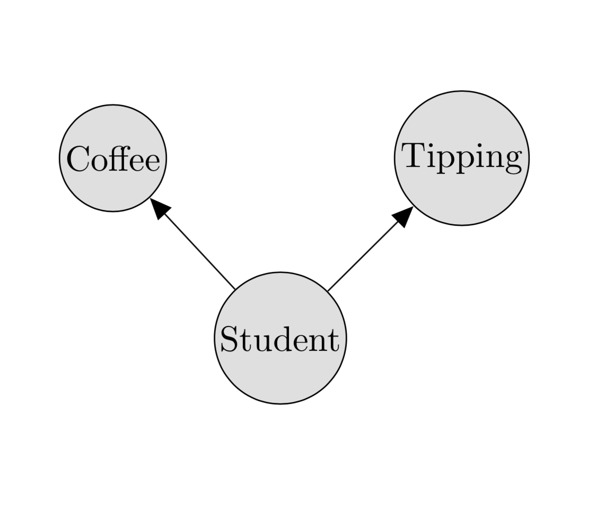
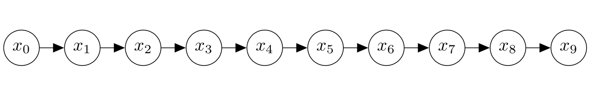

Graphical models are a useful tool in machine learning, as they give us a natural means of expressing complex probability distributions in the language of graph theory. For example, after deciding that graduate student life is no longer for me, I may decide to start up a coffee business in Oxford. Now, in order to be able to tailor my supply purchases to the town’s demand, I find myself in need of a good model of the distribution of coffee preferences across the citizens of Oxford.
I start off simply serving people coffee and taking notes on who comes in to my coffee shop. I then observe that the population can be broken down into two groups: university students, and normal people. I notice that university students on average drink 3 cups of coffee per day, whereas normal people drink 1. I also notice that that people who buy more coffee provide a tip on a smaller fraction of their purchases. However, when I take a closer look I realize that this is actually caused by the fact that students are much less likely than normal people to tip. In fact, students who buy more coffee don’t tip any more or less frequently than students who buy less, and the same goes for normal people. Thus I observe that tipping frequency and coffee consumption are conditionally independent given that I know whether the person is a student.
I’ll provide the following definitions now for clarity:
Conditional independence: We say that \(a\) is conditionally independent of \(b\) given \(c\) if \(p(a\mid b,c) = p(a \mid c)\). The following shorthand notation is common: \[\newcommand{\bigCI}{\perp\mkern-10mu\perp} a \bigCI b \mid c \]
Graphical Model: A graphical model is a graph \(G(V,E)\) representing a probability distribution on a set of random variables for which each \(v \in V\) represents a subset of the random variables and the set \(E\) captures the conditional independence structure of the distribution. The edges may be directed or undirected, corresponding to directed and undirected graphical models.
For example, a graphical model describing coffee consumption and tipping frequency would look something like this:

Note that there’s no arrow between tipping and coffee, because they’re both conditionally independent of each other given that we know whether we’re dealing with a student. This particular graphical model is an example of a Bayes network.
Bayesian network: A Bayesian network is a special class of graphical model for which the edges form a DAG (directed acyclic graph).
After a few weeks in the coffee business, I observe that the number of customers I receive on any given day seems to depend only on the number of customers I received the day before. I am able to deduce that the citizens of Oxford engage in a bizarre process of coffee shop selection by which every night, each person chooses one other townsperson at random, and then goes to the coffee shop that person had visited during the day. I need to order coffee beans three days in advance, so on Monday I would like to know what the distribution of coffee purchasers will be on Thursday. To do this I will exploit the structure of markov chains to perform inference on the graphical model.

Now, I want to figure out the marginal distribution \(p(x_3)\), where \(x_3\) represents the amount of coffee that will be bought that day. On day zero, I had 500 customers. I could sum over all of the possible values for \(x_1, x_2, x_3\) and compute \(p(x_1|x_0)p(x_2|x_1, x_0)p(x_3|x_2, x_1, x_0)\) to find the distribution over values for \(x_3\), but if we suppose there are 100000 potential customers and each \(x_i\) can take on any integral value between 0 and 100,000, that would involve computing \(100,000^3\) different probabilities.
Fortunately, having studied probability before entering the coffee business, I know that the conditional probability of \(x_i\) given \(x_{i-1}\) follows a binomial distribution. I also know that since \(p(x_3|x_2, x_1, x_0) = p(x_3|x_2)\), I don’t really need to compute the probability of every possible combination of \(x_3, x_2, x_1\) in order to compute the marginal \(p(x_3)\). Instead I can use a dynamic programming approach. That is, I compute \(p(x_1|x_0)\) (100,000 numbers). Then I compute \(p(x_2|x_1)\) (I perform \((100,000)^2\) computations but only need to save the probabilities for \(x_2\)). Then for \(x_3\) I need only used my saved values for \(x_2\) and compute \(p(x_3|x_2)\) for each value of \(x_2\). This means that I save on about \(9.99 \times 10^{14}\) computations that I didn’t have to perform because I took advantage of the graph structure of my data.
Inference becomes more complicated when the Bayesian network doesn’t form a chain, but the principle is still the same. In fact, even when the network is no longer acyclic, we can still perform “loopy belief propagation”, in which we run the algorithm that works for the acyclic case and hope it eventually converges (spoiler alert: it doesn’t always do so). In the future, I’ll try to add to this post and summarize some work in approximate inference in graphical models, and also highlight how they tie in to the deep learning world.